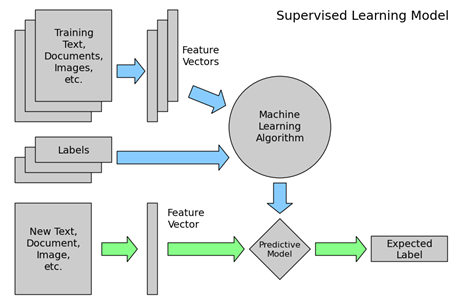

Supervised learning methods learn from labeled data and then use that insight to make decisions on the testing data.
As discussed in the previous week, supervised learning problems can be further grouped into regression and classification problems.
Supervised learning includes classification algorithms, which take as input a dataset and the class of each piece of data so that the computer can learn how to classify new data.
For example, in the previous chapter, we have seen the usages of a supervised classification technique to detect fraudulent payment from the “payment fraud” dataset. In that example, the dataset contained labeled transaction data for online purchases collected from an eCommerce retailer. The “label” corresponding to each transaction indicates whether any transaction instance is a fraudulent or normal activity.
On the basis of this information, the classification algorithm learns the difference between fraudulent or normal instances when given any input transactions. Then, for any given new transaction instance the trained model would be able to predict the class of fraud or normal. Any classification algorithm such as support vector machines, random forests, artificial neural networks (ANNs) can be employed to solve such problems.
Regression algorithms predict the value of an entity’s attribute (“regression” here has a wider sense than merely statistical regression). A continuous output variable is a real-value, such as an integer or floating-point value. Regression algorithms include linear regression, decision trees, Bayesian networks, fuzzy classification, and ANNs. In a regression problem where input variables are ordered by time, it is often known as time-series forecasting.

Figure: Overview of supervised learning process (source: [7])